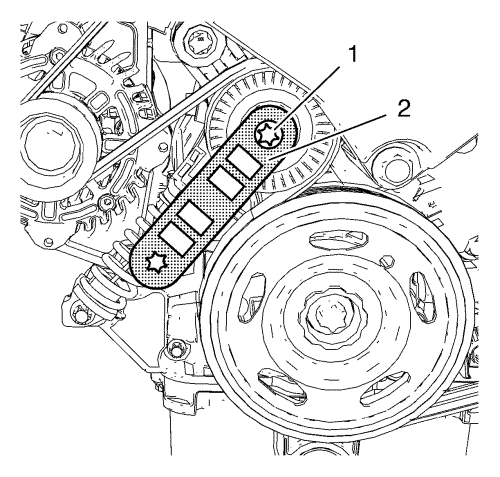
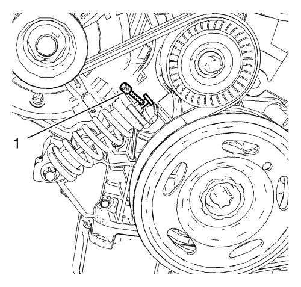
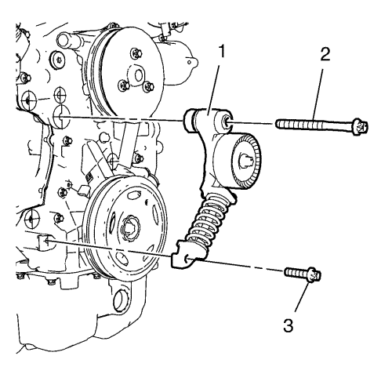

Sustitución del dispositivo tensor de la correa de accionamiento
| • | EN-955-2 Pasador de bloqueo |
| • | EN-956 Llave de retención |
Si desea informarse sobre herramientas regionales equivalentes, consultar Herramientas especiales .
Procedimiento de desmontaje
- Abra el capó.
- Desmonte el soporte de montaje del motor. Consultar Sustitución del soporte de montaje del motor - lado derecho .

Nota: Se ha quitado el soporte del alojamiento del motor.
- Monte la llave de retención EN-956 (2) en el dispositivo tensor de la correa de accionamiento (1).

- Mueva el dispositivo tensor de la correa de accionamiento en sentido horario hasta que se pueda fijar con el pasador de bloqueo EN-955-2 (1).
- Desmonte la llave de retención EN-956.
- Desmontar la correa de accionamiento.
- Repita los pasos 3 y 4 para desmontar el pasador de bloqueo EN-955-2 del dispositivo tensor de la correa de accionamiento.

- Retire el tornillo superior (2) del dispositivo tensor de la correa de accionamiento.
- Retire el tornillo inferior (3) del dispositivo tensor de la correa de accionamiento.
- Retire el dispositivo tensor (1) de la correa de accionamiento.
Procedimiento de montaje
- Monte el tensor de la correa de accionamiento (1).
- Monte el tornillo inferior del dispositivo tensor de la correa de accionamiento (3).
- Monte el tornillo superior del dispositivo tensor de la correa de accionamiento (2).
Precaución:Consulte Precaución con las fijaciones en la sección Prólogo.
- Apriete el tornillo inferior del dispositivo tensor de la correa de accionamiento a 22 N·m (16 lib. pie).
- Apriete el tornillo superior del dispositivo tensor de la correa de accionamiento a 55 N·m (41 lib. pie).
Nota: Se ha quitado el soporte del alojamiento del motor.
- Monte la llave de retención EN-956 (2) en el dispositivo tensor de la correa de accionamiento (1).
- Mueva el dispositivo tensor de la correa de accionamiento en sentido horario hasta que se pueda fijar con el pasador de bloqueo EN-955-2 (1).
- Monte la correa de accionamiento.
- Mueva el dispositivo tensor de la correa de accionamiento en sentido horario hasta que se desmonte el pasador de bloqueo EN-955-2.
- Deje que el tensor retroceda lentamente.
- Desmonte la llave de retención EN-956.
- Monte el soporte de montaje del motor. Consultar Sustitución del soporte de montaje del motor - lado derecho .
- Cierre el capó.
| © Copyright Chevrolet. All rights reserved |